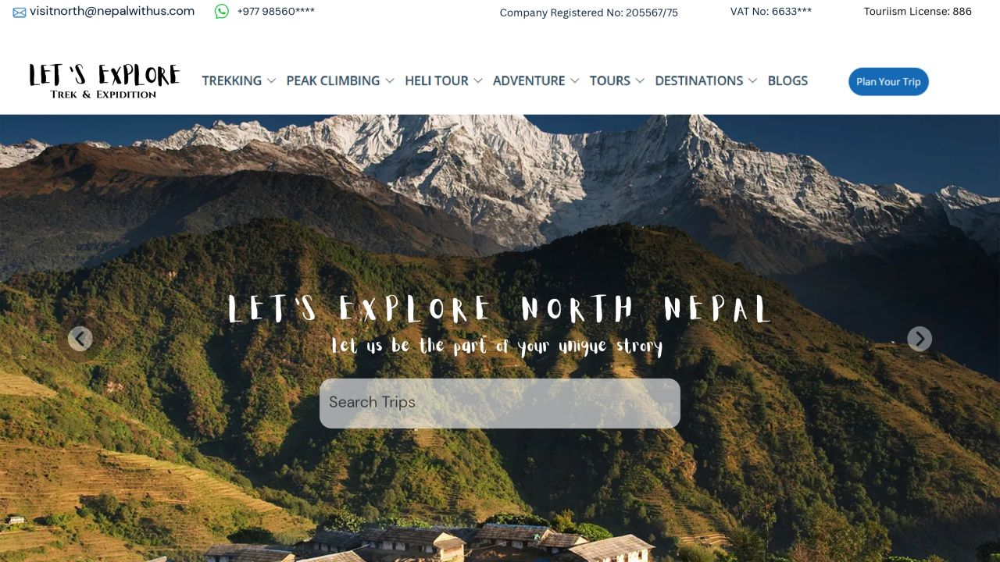

< div class = " mockup info "> UI\UX · FigmaVisit Norht Nepal
Short Description: what the website is for, who it is for, and what i designed ( homepage, landing page, app screens ).
What I Learned
- Important of spacing and visual hierarchy
- Using a consistent colour palette and fonts
- Designing for mobile as well as desktop
Msiatkes I made
- Used too many fonts at the start
- Text was too small to read on mobile
- Did not plan the layout before designing